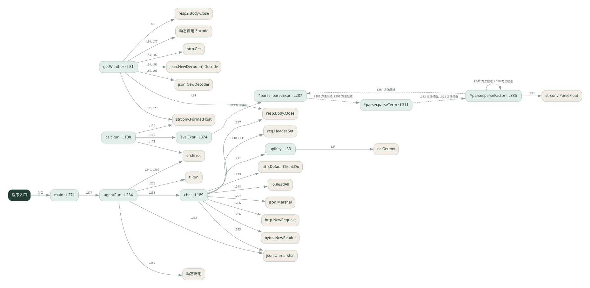

3-1 · 全课程第 41 节
框架工具调用 Agent
038_real.go
源码快照 efc313327b6c · 静态解析 · 2026-09-10
01 / 要完成的事
把天气与计算工具交给 Agent，模型选择工具，框架或循环执行并回传结果。
02 / 为什么要做
手写循环要处理工具描述、参数和消息回填，框架可以统一这些环节。
03 / 当前代码状态
直接用 HTTP 与模型通信，再由 agentRun 分发工具；没有 LangChain 依赖。getWeather 连接真实天气服务，calcRun 使用本地算术解析器。
存在外部服务或模型依赖；执行前需按源文件配置依赖和凭据，可能联网或产生 API 费用。 本次只做静态解析，没有运行练习，也没有替你填写或修改原代码。
04 / 调用图
打开大图 ↗实线：源码中的直接调用；虚线：函数引用/注册、动态调用或按方法名推断的候选。L 是调用所在源码行号。箭头不表示执行顺序或每次必经；分支、循环、异步调度及框架内部调用需结合源码。灰色是外部/未解析目标，橙色是动态分发；省略 print、len 和常规容器操作以减少干扰。孤立函数可能尚未接入。

先从 main（程序入口） 出发，沿箭头找到本文件函数，再查看外部调用或动态分发。右侧调用清单保留所有静态调用点，能回到原文件逐行对照。
05 / 函数定位
| 函数 / 定义行 | 职责（源码注释） | 内部调用 |
|---|---|---|
apiKeyL33 | 从环境变量读 key，读不到就用占位符 | os.Getenv |
getWeatherL51 | 天气工具：真调 Open-Meteo（免费、无需 key） | 动态调用.Encode, http.Get, resp.Body.Close, json.NewDecoder().Decode, json.NewDecoder, len, fmt.Sprintf, strconv.FormatFloat, resp2.Body.Close |
calcRunL108 | 计算工具：Go 里没有 eval，用递归下降求值（这里允许 + - * / ( ) 和数字） | evalExpr, err.Error, strconv.FormatFloat |
chatL189 | chat：真调 DeepSeek 的 /chat/completions，把工具 schema 一起发过去 | make, len, append, json.Marshal, http.NewRequest, bytes.NewReader, req.Header.Set, apiKey, http.DefaultClient.Do, resp.Body.Close, io.ReadAll, fmt.Errorf, string, json.Unmarshal |
agentRunL234 | 以源码函数体为准；下列调用展示其依赖。 | chat, err.Error, len, append, json.Unmarshal, 动态调用, t.Run, fmt.Printf |
mainL271 | 以源码函数体为准；下列调用展示其依赖。 | fmt.Println, fmt.Printf, agentRun |
*parser.parseExprL287 | 以源码函数体为准；下列调用展示其依赖。 | p.parseTerm, len |
*parser.parseTermL311 | 以源码函数体为准；下列调用展示其依赖。 | p.parseFactor, len |
*parser.parseFactorL335 | 以源码函数体为准；下列调用展示其依赖。 | len, fmt.Errorf, p.parseFactor, p.parseExpr, strconv.ParseFloat |
evalExprL374 | 以源码函数体为准；下列调用展示其依赖。 | make, len, append, string, p.parseExpr, fmt.Errorf |
这样做的优点
更容易增减工具和复用调用协议。
代价与局限
框架增加版本依赖和调试层次；工具本身的正确性仍需自己负责。
适用场景
工具数量逐渐增加的助手原型。
不宜直接照搬
极简规则流程，或必须精确控制每一个调用细节且不愿引入框架的项目。
动手检验理解
给出同时需要天气和算术的问题，检查工具结果是否都进入最终回答。
有未实现位置时先预测，再补齐验证。能启动不等于逻辑正确。
查看全部 77 个静态调用 / 引用点
| 调用方 | 目标 | 源码行 | 类型 |
|---|---|---|---|
| apiKey | os.Getenv | 34 | 调用 |
| getWeather | 动态调用.Encode | 54 | 调用 |
| getWeather | http.Get | 57 | 调用 |
| getWeather | resp.Body.Close | 61 | 调用 |
| getWeather | json.NewDecoder().Decode | 69 | 调用 |
| getWeather | json.NewDecoder | 69 | 调用 |
| getWeather | len | 72 | 调用 |
| getWeather | fmt.Sprintf | 73 | 调用 |
| getWeather | 动态调用.Encode | 77 | 调用 |
| getWeather | strconv.FormatFloat | 78 | 调用 |
| getWeather | strconv.FormatFloat | 79 | 调用 |
| getWeather | http.Get | 82 | 调用 |
| getWeather | resp2.Body.Close | 86 | 调用 |
| getWeather | json.NewDecoder().Decode | 93 | 调用 |
| getWeather | json.NewDecoder | 93 | 调用 |
| getWeather | fmt.Sprintf | 102 | 调用 |
| getWeather | fmt.Sprintf | 104 | 调用 |
| calcRun | evalExpr | 110 | 调用 |
| calcRun | err.Error | 112 | 调用 |
| calcRun | strconv.FormatFloat | 114 | 调用 |
| chat | make | 190 | 调用 |
| chat | len | 190 | 调用 |
| chat | append | 192 | 调用 |
| chat | json.Marshal | 204 | 调用 |
| chat | http.NewRequest | 206 | 调用 |
| chat | bytes.NewReader | 206 | 调用 |
| chat | req.Header.Set | 210 | 调用 |
| chat | req.Header.Set | 211 | 调用 |
| chat | apiKey | 211 | 调用 |
| chat | http.DefaultClient.Do | 213 | 调用 |
| chat | resp.Body.Close | 217 | 调用 |
| chat | io.ReadAll | 218 | 调用 |
| chat | fmt.Errorf | 220 | 调用 |
| chat | string | 220 | 调用 |
| chat | json.Unmarshal | 223 | 调用 |
| chat | len | 226 | 调用 |
| chat | fmt.Errorf | 227 | 调用 |
| agentRun | chat | 238 | 调用 |
| agentRun | err.Error | 240 | 调用 |
| agentRun | len | 244 | 调用 |
| agentRun | append | 249 | 调用 |
| agentRun | json.Unmarshal | 252 | 调用 |
| agentRun | 动态调用 | 252 | 调用 |
| agentRun | t.Run | 259 | 调用 |
| agentRun | err.Error | 260 | 调用 |
| agentRun | fmt.Printf | 264 | 调用 |
| agentRun | append | 265 | 调用 |
| main | fmt.Println | 272 | 调用 |
| main | fmt.Println | 273 | 调用 |
| main | fmt.Println | 274 | 调用 |
| main | fmt.Printf | 276 | 调用 |
| main | fmt.Printf | 277 | 调用 |
| main | agentRun | 277 | 调用 |
| *parser.parseExpr | p.parseTerm | 288 | 调用 |
| *parser.parseExpr | len | 292 | 调用 |
| *parser.parseExpr | p.parseTerm | 298 | 调用 |
| *parser.parseTerm | p.parseFactor | 312 | 调用 |
| *parser.parseTerm | len | 316 | 调用 |
| *parser.parseTerm | p.parseFactor | 322 | 调用 |
| *parser.parseFactor | len | 336 | 调用 |
| *parser.parseFactor | fmt.Errorf | 337 | 调用 |
| *parser.parseFactor | p.parseFactor | 342 | 调用 |
| *parser.parseFactor | p.parseFactor | 350 | 调用 |
| *parser.parseFactor | p.parseExpr | 354 | 调用 |
| *parser.parseFactor | len | 358 | 调用 |
| *parser.parseFactor | fmt.Errorf | 359 | 调用 |
| *parser.parseFactor | len | 365 | 调用 |
| *parser.parseFactor | fmt.Errorf | 369 | 调用 |
| *parser.parseFactor | strconv.ParseFloat | 371 | 调用 |
| evalExpr | make | 376 | 调用 |
| evalExpr | len | 376 | 调用 |
| evalExpr | len | 377 | 调用 |
| evalExpr | append | 379 | 调用 |
| evalExpr | string | 382 | 调用 |
| evalExpr | p.parseExpr | 383 | 调用 |
| evalExpr | len | 387 | 调用 |
| evalExpr | fmt.Errorf | 388 | 调用 |